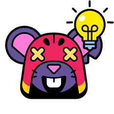
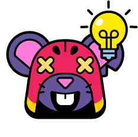

レア度: ハイパーレア
体力: 5600
移動速度: 普通
リロード: 遅い
ダメージ(通常攻撃): 2280
ダメージ(ウルト): 3200
ハイパーチャージダメージ上昇率: 25％
ハイパーチャージスピード上昇率: 24％
ハイパーチャージシールド上昇率: 5％
レア度: ハイパーレア
体力: 5600
移動速度: 普通
リロード: 遅い
ダメージ(通常攻撃): 2280
ダメージ(ウルト): 3200
ハイパーチャージダメージ上昇率: 25％
ハイパーチャージスピード上昇率: 24％
ハイパーチャージシールド上昇率: 5％

グロムは通常攻撃が当てにくいのでその一発一発の価値が上がるXファクターをスターパワーとして推奨します。ガジェットと致しましては、グロムを使う上で監視カメラが役に立つようなブッシュの多いマップで使用するのは避けた方が良いですグロムガジェットを除いたグロム自信の索敵能力とそういったステージでよく用いられるブロウラーを考慮した上で。ギアに関してはシールドは必須であり、燃える不死鳥のような、ブッシュがそこそこあるマップではダメージギアの代わりにビジョンギアを選択すると良いでしょう。
グロムはノックアウトや賞金稼ぎのようなキルを主体としたモードが得意です。投げであることと超リーチに対する火力の高さで壁があり長射程が強いとされるマップで使うことを推奨します。強奪は編成によっては選べなくもないですが格別強いわけではないので積極的に使う必要はないです。盤面をキープしたり押し上げる能力に乏しいのでブロストライカー、エメラルドハント、ホットゾーンといったモードでは使わないようにしましょう。ソロモードでの使用も避けた方が良いです。
グロム持ち前の射程を最大に生かした間合いを十二分にとった戦い方をすると良いでしょう。決して相手を近づけずスターパワーで火力の上がった通常攻撃の先端を当てることを意識付けましょう。ガジェットは不意打ちやウルトを撃った直後に使用するとリターンを得やすいです。通常攻撃はなるべく二回同時に撃つと当てやすいです。
| S | |
|---|---|
| A | |
| B | |
| C | |
| D | .webp) 

|
| E |